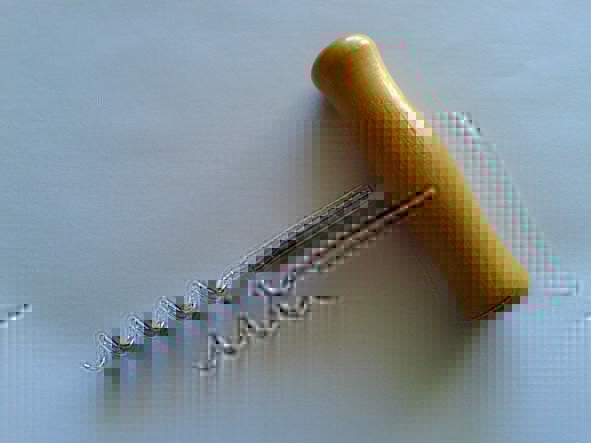
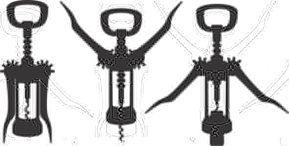
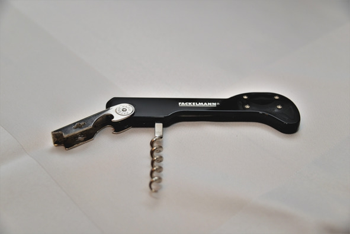
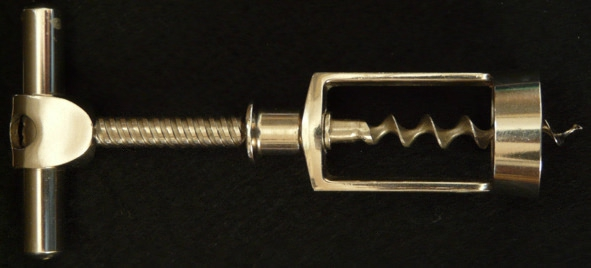
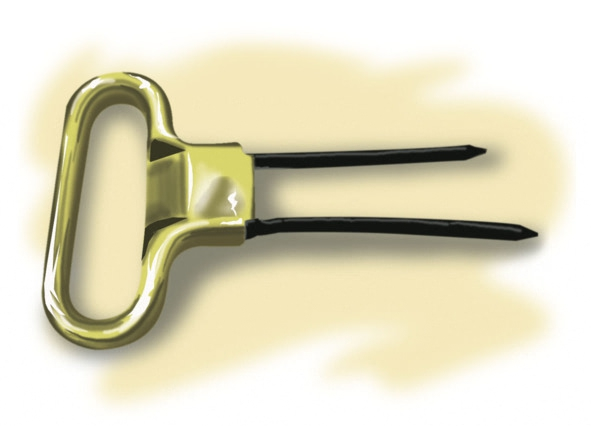
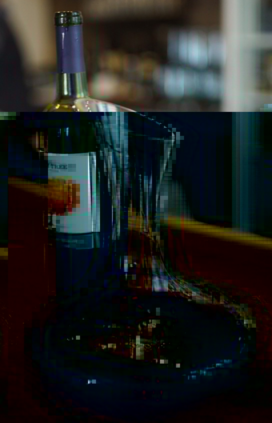
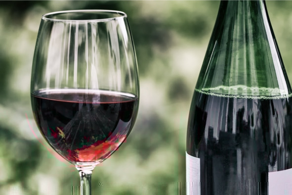
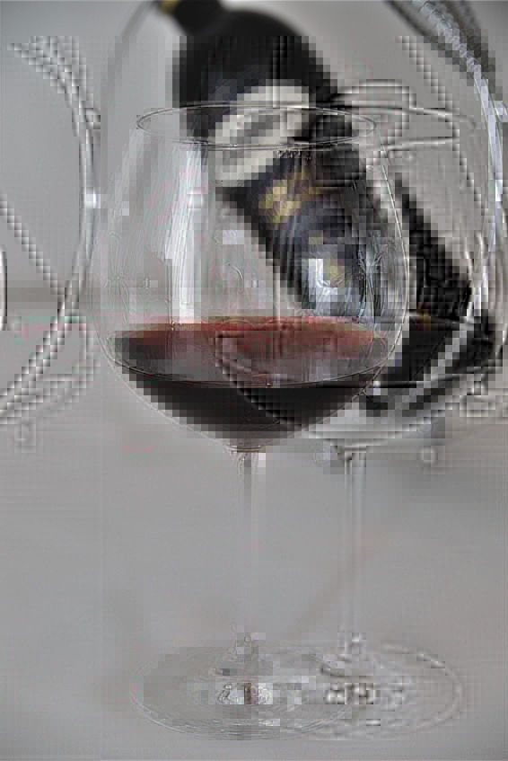
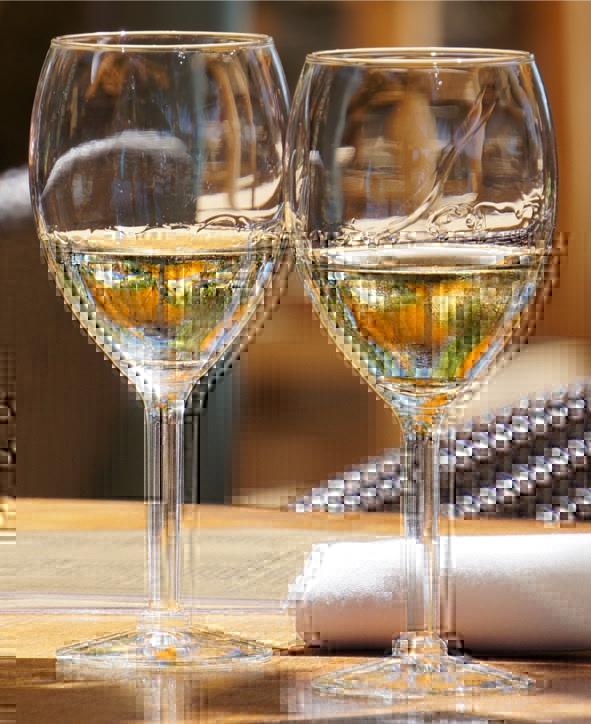
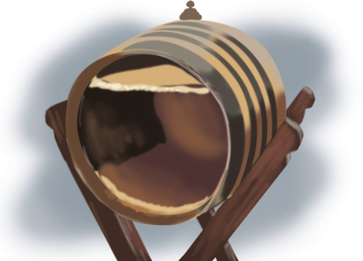

Вино, сидр, пуаре

Вино (др.-греч. ?????, лат. vinum, арм. gini, готск. wein, др.-в.-нем. win, груз. ?vino, араб. waynun?, др.-евр. jajin?) – алкогольный напиток крепостью 6—16% об., полученный методом сбраживания фруктового сока (зачастую виноградного). Родиной вина считается Кавказ и Малая Азия. Предположительно, впервые пить забродивший виноградный сок начали в 7—8 тысячелетии до н. э.
Для большинства народов понятие «вино» ассоциируется именно с перебродившим виноградным соком. При этом аналогичные напитки из другого сырья имеют либо отдельное название (например, вино из яблок – сидр), либо в их названии указано сырье, например, яблочное вино, вишневое вино и т. д.
Сидр (фр. cidre) – алкогольный напиток крепостью 6—14% об., полученный путем сбраживания яблочного сока (возможно добавление сахара) на винных или натуральных (находятся на кожице яблок) дрожжах. Кроме яблочного, которого должно быть минимум 50% объема, в состав сусла могут входить грушевый и айвовый соки.
Фактически сидр является яблочным вином, но зачастую сусло не дображивают, вследствие чего сидр получается газированным и не таким крепким, как виноградные сорта. Изобретателем сидра считается король франков Карл Великий (VIII – IX вв.), однако о похожем напитке упоминал еще римский писатель Плиний. В Средние века сидр считали национальным спиртным басков, сейчас основными странами-производителями являются Братания и Франция. Обычно для производства сидра используют разные сорта яблок (сладкие, горькие и кислые) в разных пропорциях.
Пуаре, перри, перада (фр. poire, англ. perry, исп. perada) – алкогольный напиток крепостью 5—10% об. из сброженного сока груши. По технологии производства практически не отличается от сидра и по факту является грушевым вином. Активно производился в XVII веке в английских графствах Глостершир, Херефордшир и Вустершир. В XX веке пуаре утратил популярность, уступив место традиционному вину, пиву и сидру.
История появления вина
Археологи не могут однозначно ответить, когда и где изобретено вино. Очевидно, что уже 8—10 тысяч лет назад люди знали культурный виноград Vitis Vinifera, ели плоды и пили его сок. По крайней мере, сохранились черепки глиняных сосудов с остатками винного напитка, а первые графические и текстуальные свидетельства существования вина датируются 4 тысячелетием до нашей эры.
По одной из версий современное слово «вино» родственно грузинскому «ghvivill» – «цвести, бродить». Фасмер (известный немецкий языковед российского происхождения), однако, прослеживает общие корни со славянским «вить», а некоторые исследователи даже утверждают, что в основе термина лежит санскритский корень «vena» – «любимый». Ни у одной из этих гипотез нет доказательств.
Легенды о происхождении вина
Любопытный факт: в любой древней религиозной системе есть миф о том, как появилось вино. Особенно известна греческая легенда: античные сказители уверяют, что к этому причастен пастух Эстафилос, который однажды искал сбежавшую овцу, а когда нашел, животное поедало листья какого-то незнакомого растения. Удивленный юноша собрал плоды странного дерева и принес их своему хозяину, тот выжал из ягод сок и получил освежающий напиток. Потом виноградный сок случайно оставили на солнце, он перебродил, и люди узнали, что получившийся хмельной напиток веселит не хуже похода в древнегреческий театр, а исцеляет почти как Гиппократ.
Римляне, финикийцы, древние германцы и прочие народы приписывали честь создания вина своим богам – неудивительно, что оно активно использовалось во время религиозных ритуалов и считалось напитком для знати. Впрочем, в том же Древнем Риме вино было настолько распространено, что его давали даже рабам – но, конечно, это были не коллекционные ароматные вина, а напиток третьего сорта. В римской мифологии утверждается, что первую в мире виноградную лозу посадил Сатурн, бог земли и посевов.
Очень трогательна и по-восточному изыскана персидская легенда: в Малой Азии верят, что некий царь получил семена винограда в дар от благодарной птицы, спасенной им от змеи. Выросло дерево, дало плоды, виноградный сок оказался сладок и свеж, и долгое время люди пили его, чтобы утолить жажду. Однажды царю принесли подкисший напиток, он рассердился, велел убрать сосуд подальше. Перепуганные слуги унесли негодный сок в подвал, да там и забыли. Некоторое время спустя любимая наложница царя слегла с сильной головной болью. Девушка не спала несколько ночей, она так мучилась, что решила умереть. Она выпила весь перебродивший сок, надеясь, что он превратился в яд, однако всего лишь проспала несколько суток и проснулась полностью здоровой. Так вино стало известно тюркским народам.
В Египте история виноделия уходит корнями в эпоху Древнего царства (начало XXVIII – середина XXIII в. до н. э.) – сохранились барельефы, изображающие сборщиков винограда за работой, есть также письменные свидетельства.
В Греции история вина началась около 4000 лет назад. Этому способствовал мягкий теплый климат страны. Но эллинское вино сильно отличалось от современного: это был густой напиток с травами, орехами, медом. Некоторые рецепты предписывали даже добавлять в вино золу, белую глину или масло.
Рим, очевидно, перенял греческие традиции, обогатил их и успешно распространил по остальному миру в ходе победоносных завоеваний. Именно римляне научились выдерживать вино в бочках (в литературе того времени упоминаются сорта столетней выдержки, хотя это маловероятно) и наладили экспорт в другие страны Европы.
Закавказье претендует на роль «колыбели» виноделия – в этом регионе вино появилось не менее 4000 лет назад, а семантический анализ самого слова «вино» не исключает его кавказского происхождения.
Во Франции производить ароматный пьянящий напиток начали не позже VII века до н. э., в Португалии – во II в. до н. э., а в Германии – по самым скромным прикидкам как минимум в I веке нашей эры, а то и раньше.
В средневековой Европе распространению вина поспособствовало два фактора: укрепление христианства и мореходство. Церковь не только всячески поощряла потребление вина в ритуальных целях, но и сама его производила – до сих пор высоко ценятся монастырские сорта. Благодаря освоению мореходства страны – производители вина смогли наладить торговые связи не только с ближайшими соседями, но и с другими континентами. Именно благодаря развитому экспорту в Англии стали популярны такие напитки, как херес и мадера: британцы пили вино как воду – в буквальном смысле, в Средние века никто и слыхом не слыхивал про чай, именно вино подавали к столу во время любого приема пищи. Развитию вина немало способствовала алхимия – средневековым ученым нередко удавалось находить не только новые химические соединения, но и оригинальные вкусы.
Победоносному шествию вина по Европе чуть не помешала разразившаяся в конце XIX века эпидемия филлоксеры, уничтожившая почти все виноградники и автохтонные сорта винограда. Именно тогда на международную арену вышли абсент, пиво и другие виды алкоголя. К счастью, хоть и с потерями, но этот критический момент в истории вина преодолели – европейские лозы стали скрещивать с североамериканскими сортами, имеющими врожденный иммунитет к вредителю.
Несмотря на то что в некоторых регионах современной России виноделие появилось много веков назад (территория современного Дагестана, низовья Дона), в целом на Руси отдавали предпочтение хмельному меду, пиву и браге. Промышленное производство вина началось только при Петре I – прогрессивный царь подсмотрел зарубежные технологии и внедрил их в своей стране.
Классификация и основные виды вин
По используемому соку:
– виноградные – готовятся только из виноградного сока, в процессе производства запрещено использовать любые другие материалы;
– плодовые – изготавливаются из грушевого или яблочного сока;
– ягодные – в процессе производства используются садовые и лесные ягоды;
– растительные – делаются из сока деревьев (клен, береза), дынь, арбузов, других огородных растений (ревень, пастернак);
– изюмные – в качестве виноматерила используется изюм;
– многосортные – получают путем смешивания разного сырья. Среди многосортных вин выделяют купажные и сепажные. Купажные – смешиваются уже готовые виноматериалы (брожение разных сортов происходит отдельно), сепажные – ферментация смешанного сока.
Виноградные вина по цвету:
– красные – в технологии производства используются предварительно раздавленные ягоды винограда красных сортов. При длительной выдержке эти вина постепенно теряют темную окраску. К красным винам относятся такие знаменитые марки, как «Бордо» (классическое вино Западной Франции, подающееся к жаркому), «Каберне Совиньон» (имеет густой сложный аромат, хорошо подходит к курице и макаронам), «Кьянти» (известное итальянское ароматное вино, идеально сочетающееся со стейками и бургерами), «Божоле» (сорт молодого легкого вина), «Мерло» (ароматный и густой напиток к простой пище) и «Пино Нуар» (густое терпкое вино, подающееся к любым блюдам);
– белые – в большинстве случаев делаются из сока белых сортов винограда. Если используются красные сорта винограда, тогда с ягод предварительно снимают кожицу, содержащую красящие вещества. К белым винам относят «Совиньон Блан» (имеет травяной аромат и подается с рыбой), «Шардоне» (настаивается в дубовых бочках, прекрасно подходит к легкой пище), «Шенен Блан» (отличается пряным сладким вкусом, его подают к овощам и курице), «Гевюрцтраминер» (бодрящий напиток, подаваемый к острым блюдам и рыбе), «Рислинг» (вкус напоминает мед, сочетается с восточными блюдами и телятиной) и «Сотерн» (сладкое густое десертное вино);
– розовые – для получения розового цвета кожицу винограда удаляют сразу после начала процесса ферментации. Эти вина делаются из смеси красных и белых сортов винограда, при этом используется технология приготовления белых вин.
Классификация вин по содержанию сахара и спирта:
– столовые вина. Бывают сухими (сахар до 0,3%, спирт – 9—14% об.), полусухими (сахар – 0,5—3%, спирт – 9—12% об.) и полусладкими (сахар – 3—8%, спирт – 9—12% об.);
– крепленые вина. Делятся на крепкие (сахар – 1—14%, спирт – 17—20% об.), десертные полусладкие (сахар – 5—12%, спирт – 14—16% об.), сладкие (сахар – 14—20%, спирт – 15—17% об.), ликерные (сахар – 21—35%, спирт – 12—17% об.), ароматизированные (сахар – 6—16%, спирт – 16—18% об.). К крепленым винам относятся такие разновидности, как мадера, херес и портвейн;
– игристые вина – могут иметь разное содержание сахара и спирта, в процессе вторичного брожения их дополнительно насыщают углекислым газом. Самым известным игристым вином в мире является шампанское.
Вина по способу изготовления:
– подслащенные – для усиления вкуса в состав добавляют сахар или мед, это десертные, ликерные и медовые вина;
– разбавленные – перед брожением фруктовый сок разбавляют водой;
– спиртовые – содержат чистый винный спирт, повышающий крепость напитка;
– шипучие (игристые и искристые) – вино, насыщенное углекислым газом.
Категории качества европейских вин
Классификация вина по категориям решает сразу две задачи: во-первых, помогает потребителям сориентироваться и выбрать наилучшее соотношение между ценой и качеством, во-вторых, устанавливает четкие стандарты, соответствуя которым, производитель может перейти из одной группы в другую. Любому вину (красному, белому сухому, сладкому, столовому и т. д.) можно присвоить одну из категорий. Вид вина определяет его крепость, содержание сахара и предназначение. Категория – это метрика качества, зависящая от региона производства.
Общая категоризация
Согласно регламенту Совета Европы №479/2008 от 29 апреля 2008 года, все европейские вина начиная с 2012 года делятся на три категории:
– AOP/DOP/PDO (Appellation d’Origine Protegee, Denominazione di Origine Protetta, Protected Designation of Origin) – заменяет высшую категорию, которая раньше существовала в каждой стране;
– IGP/PGI (Indication Geographique Protegee, Protected Geographical Indication) – местное вино, произведенное в конкретном регионе и минимум на 85% состоящее из винограда, выращенного в этой же местности;
– wine – заменяет понятие «столовое вино», которое использовалось в классификации разных стран для обозначения напитков без характерных региональных признаков, производители столовых вин получили право указывать на этикетке сорт винограда и год производства.
Все производители, которые находились в промежуточных национальных категориях, в зависимости от соответствия требованиям попадают в более высокую или более низкую категорию.
Занимательно, что параграф 3 статьи 59 регламента гласит: «Надпись AOP или IGP может не указываться на этикетке, если на ней указан традиционный термин». Это значит, что для производителей из базовых национальных категорий остались «лазейки», и многие виноделы их успешно применяют, нанося на бутылки «старую» маркировку. Поэтому наряду с новой общеевропейской, потребителям нужно знать и национальные классификации.
Категории французских вин
Именно Франция первой начала стандартизировать качество вин. Впоследствии созданную классификацию позаимствовало большинство европейских стран, создав свои национальные категории. Продукция французских виноделов контролируется институтом INAO (Institut National des Appellations d’Origine). Выделяют четыре категории вина:
– AOC (Appellation d’Origine Controlee) – высшая категория вин, контролируемая по региону (аппелласьону). К качеству этих напитков выдвигаются самые жесткие требования. Строго регламентируется территория, сорта используемого винограда, технология выращивания и производства, урожайность лозы, крепость и т. д. Перед продажей все вина категории AOC проходят обязательную дегустацию. На их этикетку нанесена аббревиатура «AOC» или ее расшифровка, где вместо слова «d’Origine» используется название региона. Например, для вин Бордо это «Appellation Bordeaux Controlee»;
– VDQS (Vin Delimite de Qualite Superieure) – вина с гарантированными параметрами качества, ожидающие присвоения более высокой категории – AOC. Хотя требования к этим винам-кандидатам несколько ниже, чем в первом случае, но большинство производителей стараются соответствовать самым высоким требованиям. Для покупателей это значит, что они могут приобрести вино категории VDQS, но получить напиток высшего качества;
– VdP (Vin de Pays) – местные вина. К этой группе относятся напитки, сделанные во Франции, но не попавшие в более высокие категории. Их сортовой состав, купаж и технология производства контролируются не так строго. Требования к урожайности лозы и крепости остаются. Фактически это вина для массового потребителя, не имеющие уникальных органолептических показателей, но их качество остается на достаточно высоком уровне;
– VdT (Vin de Table) – столовые вина, проходящие только лабораторный контроль. Для их производства может использоваться виноград, выращенный в других странах Европейского Союза (european table wine). Французские столовые вина (из местного винограда) маркируются надписью «vin de table francais».
Категории итальянских вин
В 1963 году Италия создала свою систему классификации качества вин, основываясь на уникальных характеристиках климата и почвы итальянских винодельческих регионов. Во многом эта категоризация напоминает французские стандарты. Итальянских производителей тоже делят на четыре категории:
– DOCG (Denominazione di Origine Controllata e Garantita) – высшая категория итальянских вин, проходящая строгий контроль и дегустационные тесты. Попасть в нее очень сложно. До 2008 года лишь 32 производителя удостоились этой чести. Из-за строгого отбора вина DOCG очень дорогие. Фактически эта категория позиционируется как элитная;
– DOC (Denominazione di Origine Controllata) – вина, контролируемые по происхождению. В каждом винодельческом регионе установлены свои стандарты. Вина категории DOC являются аналогом французских AOC;
– IGT (Indicazione Geografica Tipica) – местные вина, производимые только из сортов винограда, выращенных в определенном регионе. Требования к их качеству несколько ниже. В дословном переводе на русский категория IGT значит «типичное вино местности»;
– VdT (Vino da Tavola) – обычные столовые вина, к которым не выдвигаются особые требования касательно сортов винограда, технологии производства и купажирования. Это могут быть весьма качественные напитки, но без отличительной черты, присущей какому-либо региону.
Категории испанских вин
Испанцы решили не изобретать велосипед и позаимствовали французскую классификацию со всеми стандартами качества, изменив только названия. Предусмотрены следующие категории испанских вин:
– DOC (Denominacion de Origen Calificada) – высшая категория вин, контролируемая путем лабораторных тестов и дегустаций. В 1991 году категорию DOC получили вина региона Риоха, а в 2001-м – производители местности Приорат;
– DO (Denominacion de Origen) – аналог французской АОС, но в эту престижную категорию попадают только производители, которые на протяжении пяти лет демонстрировали превосходное качество своего вина;
– VdT (Vino de la Tierra) – местные вина, производители которых обязаны указывать на этикетке регион производства, сорта винограда и год сбора урожая;
– VdM (Vino de Mesa) – столовые вина с минимальным контролем качества. Могут производиться из любого сорта винограда.
Категории португальских вин
Во многом напоминает предыдущие классификации, но еще больше внимания уделяется региональному принципу. Выделяют пять категорий португальских вин:
– DOC (Denominacao de Origem Controlada) – марочные вина со строгим контролем названия и происхождения. Эта категория знаменита такими винами, как мадера и портвейн;
– IPR (Indicacao de Proveniencia Regulamentada) – вина регулируемого происхождения. Категория сложилась исторически, в нее попадает продукция 28 виноградников, установленных законом 1988 года;
– VQPRD (Vinhos de Qualidade Produzidos em Regioes Determinades) – качественные вина, произведенные по самым высоким стандартам, действующим их регионе. Категория может дополнительно присваиваться винам DOC и IPR, если производители желают подчеркнуть исключительное качество своей продукции;
– VR (Vinho Reginal) – в эту категорию попадают лучшие местные вина. Здесь нет четко определенных стандартов касательно сортов винограда, виноделы могут экспериментировать, создавая уникальные напитки;
– VdM (Vinho de Mesa) – столовые вина, к которым предъявляются минимальные требования качества.
Категории германских вин
Германские виноделы акцентируют внимание на выдержке вина, а не на регионе производства. В Европе только эта категоризация существенно отличается от французской системы. Все германские вина делятся на две группы: столовые и качественные, у каждой из них есть свои подвиды.
Качественные:
– QmP (Qualitatswein mit Pradikat) – вина высшей категории с минимальным сроком выдержки пять лет, некоторые сорта могут выдерживаться свыше 25 лет. Перед поступлением в продажу эти вина проходят обязательную дегустацию;
– QBA (Qualitatswein Bestimmer Anbaugebiete) – вина, производящиеся в одном из 13 установленных винодельческих регионов Германии. Должны соответствовать местным требованиям по качеству и составу. Проверка осуществляется путем лабораторных исследований и профессиональной дегустации вина каждого производителя.
Столовые:
– DT (Deutscher Tafelwein) – немецкие столовые вина, содержащие не менее 8,5% спирта. Выпускаются без добавок и красителей в соответствии с установленными экологическими стандартами;
– DL (Deutscher Landwein) – немецкие местные (особые столовые) вина, изготовляемые в 19 регионах из самого спелого винограда, собранного в конце сезона.
Условия хранения вина
При хранении вина нужно контролировать пять параметров:
1. Температурный режим. Оптимальная температура хранения вина – 10—15 °С. Соблюдение этого правила не только сохраняет качество напитка, но и позволяет быстро подготовить его к подаче.
В свою очередь, более высокая температура способствует быстрому старению вина, напиток теряет свежесть и тонкость вкуса. При сильном охлаждении вино перестает дозревать, его органолептические свойства ухудшаются навсегда.
Вино следует обезопасить от резких температурных перепадов, портящих пробку. Иначе в бутылку будет попадать кислород, вызывая окисление. Самыми уязвимыми являются шампанские, розовые и белые вина, стабильность их температурного режима обязательна.
2. Влажность. В помещении должна соблюдаться относительная влажность воздуха 60—80%, препятствующая высыханию пробки и образованию плесени.
3. Освещение. Вино хранят только в темном месте, так как яркий свет способствует его быстрому старению. Особенно опасны прямые солнечные лучи, они портят вкус.
4. Положение. Вина с традиционной корковой пробкой хранят только в горизонтальном положении, чтобы напиток соприкасался с пробкой и препятствовал ее высыханию. Положение бутылок с винтовыми и силиконовыми пробками не имеет принципиального значения.
5. Полный покой. Одно из важнейших условий. Вино не должно подвергаться воздействию вибрации, для этого бутылки надежно фиксируют.
Зачем в вино добавляют серу
В 99% бутылок с вином содержится диоксид серы (серный ангидрид). Это вещество добавляют почти все производители, начиная от крымских виноделов и заканчивая французскими мастерами. Теоретически можно обойтись и без серы, но тогда напиток получится очень дорогим и потребует специфических условий хранения, которые сложно обеспечить в обычных магазинах.
Диоксид серы (sulphur dioxide, E220) – бесцветный газ неприятного запаха, который используется пищевой промышленностью в качестве консерванта, предотвращающего размножение грибков и микроорганизмов. В высокой концентрации этот газ опасен для здоровья человека. При отравлении серой появляется головная боль, кашель, насморк, першение в горле, тошнота, рвота и даже отек легких.
Сульфиты (соли сернистой кислоты) являются продуктом брожения и в незначительном количестве (до 10 мг/л) есть в каждом вине. Но их естественной концентрации недостаточно для стабилизации виноматериала, поэтому производители вынуждены добавлять в напиток консервант.
Первыми серу начали использовать виноделы Средневековья. Но уже тогда люди заметили ее негативное влияние на организм. Например, в XV веке в Кельне запрещалось обрабатывать вино серой, так как «от этого пьющий становится больным». Только в некоторых городах позднего Средневековья производителям разрешили один раз обрабатывать серой винные бочки. Несмотря на свою высокую токсичность, в XVIII веке диоксид серы стал консервантом для целого ряда пищевых продуктов. Со временем была найдена концентрация, оказывающая минимальное влияние на организм.
В современном виноделии диоксид серы (в виде газа, порошка или водного раствора) используется сразу на четырех этапах промышленного производства вина: при сборе урожая, прессовании ягод, брожении (ферментации) и разливе по бутылкам. В зависимости от конкретной ситуации добавление серы в вино останавливает брожение, препятствует образованию уксусной кислоты, стабилизирует вкус и цвет, увеличивает срок хранения. Адекватной и безвредной замены этому веществу пока не найдено.
Вред диоксида серы в вине
Вредно не само наличие сульфитов, а их количество в напитке. Согласно стандартам США, максимально допустимая концентрация диоксида серы в вине – 400 мг/л. В Европейском Союзе производители не обязаны указывать количество сульфитов. Отсутствие соответствующей надписи вводит в заблуждение покупателей, считающих, что все европейские вина не содержат диоксида серы. На самом деле это не так. Даже стандарты производства органических вин (самых экологически чистых) допускают наличие сульфитов. Но их концентрация ниже – от 10 до 210 мг/л в зависимости от стандарта.
Чтобы выбрать вино с минимальным количеством диоксида серы, следует помнить о следующем:
– сульфитов меньше в красных винах, поскольку благодаря высокому содержанию танинов им требуется минимум консервантов;
– больше всего серы добавляют в сладкие и полусладкие вина, чтобы остановить их брожение;
– в винах с винтовой пробкой меньше консервантов, чем в напитках с классической (деревянной) пробкой;
– почва виноградников, где поблизости есть вулканы, сама по себе богата серой.
Переизбыток диоксида серы разрушает витамины B1 и H, приводя к нарушению обмена веществ, ухудшению состояния кожи, волос, ногтей и аллергическим реакциям. В некоторых случаях наблюдались расстройства желудочно-кишечного тракта и пищеварительной системы. Также сульфиты являются причиной сильного похмелья.
Как пользоваться разными видами штопоров
Появление штопора напрямую связано с развитием традиции закупоривать бутылки пробковой затычкой. На протяжении многих веков вино хранили в бочках и подавали сразу в кувшинах. Горлышки сосудов затыкали тряпками или замазывали глиной и смолой. Обычай использовать кору пробкового дерева утвердился только в XVIII веке вместе с развитием виноторговли, когда пришлось транспортировать большие объемы вина так, чтобы напиток не испортился по дороге.
Первый штопор был запатентован в 1795 году английским священником Самуэлем Хэншаллом, но «стальной червяк» использовался еще в XVII веке. Эта элементарнейшая конструкция создана по образу пыжовника – инструмента для извлечения снаряда из дула несработавшего порохового оружия.
Общие советы
– Прежде чем извлекать пробку, срежьте фольгу с горлышка бутылки. В ножах сомелье для этого предусмотрено специальное лезвие, также подойдет обычный кухонный нож, ножницы или даже пилка для ногтей.
– Проверьте, насколько остро заточен винт. Штопор должен легко пронизывать пробку, а не крошить или разрывать материал. Лучше всего, если рабочая часть штопора изготовлена из нержавейки и хорошо отполирована – тогда потребуется меньше физических усилий, лезвие будет легко скользить в материале и пробка без труда выйдет из горлышка.
– Всегда устанавливайте острие перпендикулярно поверхности: если спираль войдет криво, то лишь испортит пробку, но не вытащит ее.
– Наконец, сильно не вдавливайте штопор, иначе бутылка лопнет.
Классический штопор («стальной червяк»)
Самая простая конструкция «винт с рукояткой». Недостатки – требует недюжинной ловкости, силы и сноровки. Преимущества – практически невозможно сломать, элементарно прост в эксплуатации, недорог.

Классический штопор
Инструкция: вкрутите штопор в центр пробки. Не переусердствуйте! Нельзя докручивать штопор «до упора», оставьте один виток, иначе пробка начнет крошиться, испортив вкус вина. Одной рукой крепко зафиксируйте бутылку, другой – аккуратно вытяните пробку, легонько расшатывая и подкручивая.
Штопор-рычаг («Шарль де Голль» или «Бабочка»)
Когда рычаги изделия подняты вертикально вверх, модель напоминает человечка с воздетыми руками – любимым жестом французского генерала. Отсюда и забавное прозвище «Шарль де Голль». Преимущества – очень легко использовать, для извлечения пробки не требуется прикладывать усилия. Недостаток – штопор-бабочка не всегда справляется с глубоко посаженными пробками.

Штопор-рычаг
Инструкция: установите острие лезвия по центру пробки. «Ручки» штопора должны быть опущены вдоль горлышка. Одной рукой придерживайте конструкцию, другой вкручивайте центральную ручку. Боковые рычаги штопора при этом начнут приподниматься. Когда рычаги достигнут положения «вертикально вверх», установите бутылку на ровную поверхность, затем медленно опустите рычаги двумя руками сразу. Пробка легко выйдет из горлышка.
Нож сомелье
Удобный складной штопор, придуманный французскими сомелье – сотрудниками ресторана, отвечающими за поставку и хранение вин в заведении, а также представление напитков клиентам. Кроме стального винта устройство снабжено лезвием для снятия фольги и двумя ступеньками, упрощающими открытие бутылки.

Нож сомелье
Инструкция: срежьте лезвием колпачок из фольги, обнажив пробку – резкими движениями обрежьте капсулу с двух сторон в самой верхней части горлышка, прямо под выступом. Ввинтите штопор в центр пробки, оставив на поверхности один «ярус». Упритесь в горлышко бутылки первой ступенькой и, пользуясь конструкцией как рычагом, немного вытащите пробку, которая выйдет не до конца. Поменяйте положение ручки на вторую ступеньку и снова потяните. Хорошим тоном считается в самом конце вынуть пробку руками, предварительно обвернув ее чистым полотенцем.
Винтовой штопор
Механическое приспособление, максимально упрощающее раскупоривание бутылки. Оптимальный вариант для открытия вина девушками, поскольку требует минимальных усилий.

Винтовой штопор
Инструкция: приставьте спираль к пробке и вкручивайте винт до тех пор, пока вся пробка не нанижется на штопор.
Цыганский штопор («Друг дворецкого»)
Изящные щипцы, позволяющие бережно извлечь даже старую и хрупкую пробку. Модель получила название «цыганской» потому, что не повреждает пробку, и нечестные дельцы (например, цыгане) могут заменить хорошее вино в дорогой бутылке на откровенное пойло, после чего закупорить оригинальной пробкой, и визуально никто не заметит подмены.
Отсюда же и прозвище «друг дворецкого». В Англии считалось, что представители этой профессии частенько отпивают хорошее вино из запасов своих хозяев, а такая конструкция штопора позволяет легко скрывать следы преступления.

Цыганский штопор
Инструкция: вонзите щипцы по краям пробки и плавно опустите в бутылку на всю длину, затем выньте пробку, прокручивая ручку штопора.
Способы открыть бутылку вина без штопора
Многие сталкивались с ситуацией, когда нужно открыть бутылку вина, не имея штопора. Зная несколько простых способов, эту задачу можно решить за пару минут практически в любом месте: дома, во время пикника или просто на улице. Причем есть хитрости, доступные даже девушкам.
1. Затолкать пробку. Снять с бутылки защитную фольгу, положить на пробку монету и пальцем протолкнуть монету внутрь бутылки. Недостаток: это могут сделать только физически сильные люди. В альтернативном варианте используется давление напора воды из крана. Горлышко подносят к крану и открывают воду, пробка начинает медленно двигаться вниз. В эти несколько секунд очень важно не упустить момент, когда пора перекрыть кран, иначе придется пить вино, разбавленное водой.
2. Удар по дну бутылки. Пластиковую бутылку наполнить водой, затем средней частью наносить ритмичные удары по дну бутылки с вином. Пробка будет медленно выходить наружу. Этим способом легко открывают вино даже девушки.
Еще можно приложить к стене толстую книгу (для смягчения удара) и стучать дном по этой книге. Быстро открываются бутылки с вогнутым внутрь дном, пробка начинает двигаться сразу после нескольких несильных ударов. При ударах по донышку внимательно следите за пробкой, если она вылетит полностью, вино прольется. Лучше выбить пробку до середины, после чего извлечь ее руками. Слишком сильный удар твердым предметом может повредить стекло бутылки.
3. Отвертка, шуруп, плоскогубцы. Излюбленный метод домашних мастеров, которые никогда не расстаются со своим инструментом. Сначала отверткой в пробку до средины ввинчивают шуруп или саморез, потом клещами (плоскогубцами) за ввинченный шуруп вытаскивают пробка. Самодельный штопор очень эффективен, правда, во время застолья нужные инструменты есть не всегда.
4. Отбить горлышко. Старый способ и самый опасный способ. Даже если визуально стекла в вине не видно, это еще не значит, что его там нет. Невидимые глазу микроскопические кусочки могут попасть в бокал и при первом же глотке травмировать ротовую полость и пищевод.
5. Заказать штопор у таксистов. Сейчас через такси можно купить почти все. Достаточно позвонить в любую службу и сделать заказ, и спустя несколько некоторое время проблема с открытием бутылки будет решена. Не придется ухищряться или что-то изобретать.
Понятие и технология декантации вин
Споры о полезности и целесообразности декантации вин не утихают до сих пор. Для одних сомелье это лишь красивый ритуал, другие видят в нем много преимуществ. Декантация вина – это переливание вина из бутылки в специальный графин для насыщения кислородом (аэрации), очистки от осадка на дне и создания торжественной атмосферы дегустации. В основном декантируют только красные вина. Но есть белые сорта, которые после насыщения кислородом лучше раскрывают ароматические и вкусовые свойства. С точки зрения полезности декантация шампанского не имеет смысла, это просто красивый ритуал.
Декантировать вино начали несколько веков назад для красивой сервировки стола. В те времена стеклянные бутылки были роскошью, а вино продавали в бочках. Чтобы выглядеть презентабельно, владельцы заведений начали переливать напиток в графины. О ритуале с четкой последовательностью действий речь не шла, он появился позже. Однако даже после широкого распространения бутылок традиция декантирования осталась и приобрела новый смысл.
В первую очередь декантации подлежат молодые красные вина, не прошедшие фильтрацию, и напитки из винограда сортов Мальбек, Каберне Совиньон, Сира, Гренаш с выдержкой от 2 до 15 лет. Также можно декантировать качественные белые бургундские вина.
Простые столовые вина из супермаркета не имеют осадка и уникального вкуса, раскрывающегося после аэрации, поэтому не нуждаются в декантировании.
Некоторые сомелье считают, что перед декантированием бутылка вина должна несколько дней находиться в горизонтальном положении, чтобы весь осадок собрался на одной стороне бутылки. Зачастую этим правилом пренебрегают, особенно если в вине мало осадка.

Одна из самых популярных форм декантера
Инструкция по декантации вина
– Сполоснуть хрустальный графин (декантер) горячей водой.
– Зажечь свечу на столе, она станет дополнительным источником света, позволяющим вовремя увидеть осадок возле горлышка бутылки.
– Повернуть вино к гостям этикеткой, назвав производителя, аппелласьон (винодельческий регион) и год сбора урожая.
– Обрезать капсулу под кольцом, положить срезанную фольгу себе в карман. Протереть горлышко бутылки, чтобы убрать налет.
– Рычажным штопором извлечь пробку на три четверти. Обхватить ее рукой, после чего вынуть полностью. При этом очень важно не допустить хлопка, портящего торжественность момента.
– Осмотреть и понюхать пробку. Не должно чувствоваться запаха плесени или затхлости, свидетельствующего об испорченности вина.
– Положить пробку на блюдечко и поставить его возле гостей.
– Еще раз протереть горлышко бутылки.
– Вначале сомелье сам пробует вино, налив себе немного в бокал, повернувшись к гостям вправо или влево.
– Медленно перелить вино из бутылки в графин, при этом осадок не должен попасть в декантер. Чтобы следить за осадком, горлышко лучше держать над светом.
– Для насыщения кислородом вино в декантере несколько раз раскрутить по часовой стрелке. Перед наполнением бокалов напиток должен постоять 5—10 минут.
Этапы дегустации вина
Дегустация вина требует не только соблюдения всех правил, но и опыта. Адекватная оценка предложенного образца невозможна без обширной «базы» сравнения, запечатленной в памяти специалиста. Поэтому дегустатор пробует как хорошие, так и плохие вина. Любая дегустация состоит из четырех фаз: предварительной подготовки, визуального, ольфактивного и вкусового восприятия.
1. Предварительная подготовка. Дегустацию вина нужно проводить в тихом, чистом и хорошо проветренном помещении. Желательно добиться естественного освещения, влажности воздуха 60—70% и температуры 19—22 °С.
Бокалы для вина должны быть полуэллипсоидными (тип «тюльпан»), объемом 210—225 мл. Также к бокалам выдвигаются следующие требования: тонкие стенки, абсолютная прозрачность и наличие длинной ножки. Перед дегустацией бокалы должны быть чистыми и сухими. Их наполняют на одну треть (70—80 миллилитров) и держат за ножку.
Если во время застолья планируется оценить несколько разных вин, важно соблюдать порядок дегустации. Общее правило – начинают с легких вин и переходят к более насыщенным, от сухих к сладким, от молодых к старым. Рекомендовано придерживаться следующей последовательности:
– игристые (шампанское);
– легкие белые и розовые;
– выдержанные сухие белые;
– молодые красные;
– выдержанные белые сухие;
– выдержанные красные;
– сладкие и крепленые.
2. Визуальная фаза («Глаз»). Оценивается вид сверху и сбоку. Вначале бокал опускают на стол и смотрят на поверхность вина. Качественный напиток должен блестеть, а на его поверхности не должно быть каких-либо частиц. Далее бокал на белом фоне поднимают на уровень глаз, несколько секунд держат прямо, потом наклоняют. Так определяется прозрачность, цвет напитка, его оттенок и наличие углекислого газа. Присутствие в бокале углекислого газа является признаком порчи (не относится к шампанскому).
Визуальная дегустация белого вина. Блеск и прозрачность белого молодого вина свидетельствует о его высокой кислотности. Вина легкого матового оттенка содержат меньше кислоты. Зрелый напиток должен иметь соломенно-золотистый или янтарный цвет. Если заметен коричневый или сероватый ободок на «диске» – это доказательство умирания вина.
Визуальная дегустация красных вин. Напитки этого вида имеют цвет от пурпурного до коричневого. Хорошее молодое вино бывает темно-рубинового, пурпурного, гранатового или вишневого цвета. Зрелое и старое вино должно быть коричневым или красным. Мутность или коричневый цвет молодого вина свидетельствует о его порче или о несоблюдении технологии производства. Общее правило: чем лучше урожай, тем насыщеннее цвет вина.
3. Ольфактивная фаза («Нос»). Вино, не взбалтывая, наливают в бокал, делают вдох и нюхают. При этом важно уловить едва ощутимые летучие вещества и определить их интенсивность. В хорошем вине не бывает запахов осадка, серы или ферментации (дрожжей). Далее нужно покрутить бокал, держа его за ножку. Это насытит вино кислородом и освободит ароматические вещества, содержащиеся в нем. Затем в бокал опускают нос и вдыхают аромат. Так определяют индивидуальные оттенки запаха напитка.
4. Фаза вкусового восприятия («Рот»). Немного вина набирают в рот. Первое ощущение, вызываемое напитком, специалисты называют «атакой». В хорошем вине сразу же ощущается его выраженный вкус. Подержав несколько секунд напиток во рту, слегка приоткрывают губы и впускают чуть-чуть воздуха. Теперь следует сосредоточиться на своих ощущениях. Согреваясь во рту, вино будет выделять ароматические вещества. Именно в этот момент можно проанализировать его кислоту, сладость, горечь и консистенцию.
Металлический привкус свидетельствует о недостаточной кислотности, а слишком сильная вязкость указывает на перенасыщенность танином. Все составляющие вина должны быть хорошо сбалансированы, явное выделение одного из них говорит о низком качестве напитка.
Послевкусие вина – это продолжение его вкусового и ароматического воздействия после глотка. Если вино некачественное, то послевкусие пропадает очень быстро. Именно этот факт заслуживает пристального внимания при дегустации. Важно помнить, что к послевкусию не относится выраженное ощущение крепости, насыщенности танином и кислотности. Это явные признаки плохого вина.
Как правильно пить вино
Чтобы насладиться вкусом вина, нужно правильно подобрать бокалы, температуру и закуску.
Выбор бокалов
Под каждый сорт вина разработана своя форма бокала, хорошо раскрывающая органолептические свойства. Форма имеет не только эстетическое значение, но и позволяет почувствовать напиток в полной мере, оценить все его достоинства. От диаметра ободка зависит, насколько сильно будет концентрироваться аромат на выходе из бокала. Чем меньше диаметр, тем выше будет концентрация аромата. От высоты чаши зависит насыщение вина кислородом.
Бокалы для красного вина бывают двух типов: «Бордо» и «Бургундия». Самым распространенным типом является «Бордо». Эти бокалы можно использовать ежедневно, наливая в них любые красные вина. Чаша должна иметь объем не менее 600 мл, иначе некоторые богатые красные вина не полностью раскроют аромат.

«Бордо»
Бокалы типа «Бургундия» идеально подходят для вин с умеренно выраженными танинами и высокой кислотностью. Объем бургундских бокалов обычно составляет 700—750 мл, а форма чаши напоминает шар, который еще называют «баллоном». Зачастую этот вид бокалов используют дегустаторы-профессионалы, так как с их помощью можно быстро определить слабость вина или его непрочную структуру, то есть низкое качество.

«Бургундия»
Бокалы для белого вина по форме напоминают тип «Бордо», но имеют меньший объем (до 350 мл). Они позволяют сохранить оптимальную температуру напитка. Из маленького бокала вино пьют быстрее, и оно не успевает нагреться (температура подачи белых вин обычно ниже, чем красных).

Для белого вина
Бокалы для шампанского и других игристых вин имеют вытянутую форму, называемую «Флюте». Для шампанского идеально подходит бокал с узким горлышком, имеющий небольшое углубление на дне своей чашечки, это делает пузырьки более устойчивыми.
Для шампанского
Винные бокалы должны быть абсолютно прозрачными и насухо вытертыми, иначе цвет вина исказится. Чем тоньше стекло, тем удобнее и приятнее пить вино. Во время дегустации бокал наполняют максимум на 2/3 объема и держат только за ножку, чтобы не влиять на температуру.
Температура
Отвечает за полное раскрытие ароматического букета и первый вкус. Зачастую производители указывают рекомендуемый температурный диапазон. Если на этикетке информации нет, оптимальная температура подачи:
– молодых (1—2 года выдержки) красных вин – 13—15° C;
– выдержанных красных вин со сложной структурой – 15—17° C;
– белых сухих, розовых, игристых вин – 7—10° C;
– качественных белых и ликерных (сладких) вин – 9—12° C.
Правила сочетания блюд с вином
Подбор блюд зависит от традиций, сложившихся в той или иной национальной кухне. Единого мнения на этот счет нет. Универсальное правило: к винам со сложным ароматическим букетом и насыщенным вкусом подают самую простую закуску. Обратное утверждение тоже верно: изысканные блюда принято запивать простым (ординарным или столовым) вином, способствующим быстрому усвоению пищи.
Существует только три продукта, которые почти не влияют на вкус вина: белый хлеб, твердые сорта сыров без специй и фрукты. В тоже время существуют продукты, которые абсолютно не сочетаются с вином: орехи, уксус и сигареты. Уксус на некоторое время притупляет вкусовые рецепторы, орехи вяжут язык, а сигареты перебивают аромат вина.
Опытные рестораторы подбирают закуску, ориентируясь на вид вина. К дорогим белым сухим винам лучше подавать устриц, вареных раков, красную или черную икру, а также любые вторые рыбные блюда. Белые столовые вина сочетаются с мидиями, улитками, жареной рыбой, холодной свининой и телятиной. Сухие красные вина закусывают жареным мясом, нежными видами сыров и рыбой в соусе. Крепленые красные вина, содержащие свыше 12% об. спирта, хорошо пить с шашлыком, острыми блюдами и супами. Под столовые полусладкие и полусухие вина (красные и белые) можно поставить на стол жареное мясо, колбасы, овощи, грибы, блюда из дичи, запеканки, рулеты и пудинги. Из овощей лучше выбирать цветную капусту, спаржу или артишоки. Розовое сухое вино можно сочетать с хорошими сырокопчеными колбасами, жареной рыбой, белым мясом, курицей гриль и мягкими сырами.
Большинство производителей указывают на этикетке перечень блюд, с которыми сочетается их вино. Можно придерживаться этих рекомендаций, даже если они противоречат общепринятым нормам.
Зачем и как разбавлять вино водой
В Риме и Древней Греции людей, пивших неразбавленное вино, считали варварами. Впервые эту «дикость» увидели спартанцы при встрече со скифами. Впоследствии употребление чистого вина греки стали называть «пить по-скифски». В современных винодельческих странах Европы тоже разбавляют вино водой, но не так часто, как раньше.
В древности роль вина была несколько другой, чем сейчас. Например, у греков из-за нехватки питьевой воды именно вино являлось основным напитком для утоления жажды. Чистую воду позволяли пить только больным и детям, все остальные довольствовались разбавленным вином. Римляне хранили вино в загустевшем виде, так как их сосуды, амфоры, не могли обеспечить герметичность и полную сохранность жидкого вина. Перед употреблением желеобразную консистенцию приходилось разбавлять водой, это считалось венцом культуры. Жители Древнего Рима считали, что другие народы (в том числе и греки) пьют вино неразбавленным. Времена изменились, но традиция осталась, приобретая новые значения. Сейчас это целесообразно в следующих ситуациях:
1. Утоление жажды. Самая популярная причина. Идеально подходят белые виноградные вина, разбавленные в пропорции 1:3 или 1:4 (1 часть белого вина на 3—4 части воды).
2. Для снижения крепости и сладости. После правильного смешивания с водой вино пьется легко и не вызывает сильного опьянения. Также добавление воды нивелирует приторность вкуса.
3. В религиозных целях. Во время таинства Причастия православные священники дают прихожанам разбавленный кагор. Также путем смешивания с водой проверяется его качество. Для этого 1 часть кагора разбавляют 3 частями воды. Спустя 15 минут напиток пробуют. Качественный кагор должен сохранить свой цвет и аромат, суррогат сразу же мутнеет и начинает неприятно пахнуть.
Советы по разбавлению вин:
– использовать только кипяченую, родниковую или дистиллированную воду;
– объем вина должен быть меньше объема воды;
– по европейской традиции красные вина разбавляют горячей водой, белые – холодной;
– разбавленные крепленые вина полностью теряют вкус, все остальные виды можно разбавлять;
– воду наливают в вино, а не наоборот.
Крепленые вина: портвейн, херес, мадера, марсала
Портвейн (Порто)
Портвейн (с нем. portwein – «портовое вино») – португальское белое или красное крепленое вино крепостью 18—23% об., производимое на северо-востоке страны в долине реки Дору. Попадает в категорию спиртных напитков, контролируемых по происхождению.
Характерной особенностью производства портвейна является короткий цикл сбраживания сусла – 2—3 дня. Затем в сок добавляют виноградный спирт крепостью 77% об., что полностью останавливает брожение. Перед разливом в бутылки портвейн обязательно выдерживают в дубовых бочках 3—6 лет.
Дикая виноградная лоза росла в долине Дору с незапамятных времен. Но виноделием здесь начали заниматься только во времена правления Римской империи. Местность известна своим засушливым континентальным климатом, гористым ландшафтом и сланцевыми почвами. Сильные морозы зимой, проливные дожди с градом весной и опустошающая жара летом не способствуют виноделию. Виноградники приходится располагать на специально построенных террасах вдоль реки. Сами португальцы говорят, что в Дору делают вино с сильным характером.
Производство вина для будущего портвейна начал в XI веке Генрих II Бургундский, которому в приданое досталось графство Портукале (будущая Португалия). Он заменил местную виноградную лозу сортами, привезенными из Бургундии. Но из-за малопригодной местности полученное вино не отличалось изысканным вкусом, его пили только местные жители. Все изменил случай. Торговая война с Францией побудила Англию запретить импорт вин из провинции Бордо в свою страну. Англичане начали срочно искать замену французским винам. В 1703 году они подписали Метуанское торговое соглашение, гарантирующее португальским винам льготный таможенный тариф при ввозе в Англию. На тот момент в местности Дору делали только красные вина невысокой крепости (12—13% об.), которые портились при длительной транспортировке морем. Чтобы не терять привлекательный рынок, португальцы решили добавлять в свое вино бренди (винный спирт). Благодаря этому новшеству у вин появился уникальный вкус, понравившийся англичанам. Так появился портвейн.
До 1756 года портвейн производили по старой технологии, добавляя спирт в готовое сухое вино. С 1820 года винный спирт добавляют прямо в сусло. Это современный портвейн, который знаем мы.
Виды портвейна:
– Tawny («Тони») – золотисто-коричневый портвейн из красных сортов винограда с выдержкой в дубовых бочках не меньше двух лет. Обычно выдерживается намного дольше – 10, 20, 30 или 40 лет.
– Ruby («Руби») – молодой красный портвейн. Минимальное технологическое вмешательство сохраняет насыщенный фруктовый аромат и вкус. Продолжает созревать в бутылке после разлива. Свое название получил благодаря красивому рубиновому цвету.
– Colheita («Колейта») – после семи лет выдерживания портвейна «Тони» винодел может установить, что качество вина получается лучше, чем планировалось изначально. В этом случае бочка попадает под особое наблюдение. У портвейнов этого вида золотистый цвет, сбалансированный вкус и тонкий аромат. Срок выдержки – от 12 лет.
– Garrafeira («Гаррафейра») – редкий портвейн, производимый из урожая винограда одного года. Сначала напиток минимум три года выдерживают в бочке, потом еще восемь лет в бутылке. На данный момент только компания Niepoort занимается изготовлением этих портвейнов.
– Branco («Бранко») – белый портвейн с фруктовым вкусом, изготавливается из белых сортов винограда. Только портвейны этого вида делятся по содержанию сахара на сухие, полусладкие и сладкие.
– Lagrima («Лагрима») – самый сладкий портвейн. Производится путем купажирования вин разных годов.
– Late Bottled Vintage (LBV) – портвейн со сложным насыщенным вкусом, произведенный из винограда одного года. Перед разливом в бутылки выдерживается в дубовых бочках 3—6 лет.
– Crusted («Крастед») – портвейн, содержащий осадок. Изготовляется путем смешивания вин разных урожаев. Разливается без фильтрации. Перед распитием портвейны этого вида нужно декантировать (переливать в графин). Минимальный срок выдержки – 3 года.
– Vintage («Винтаж») – элитный сорт портвейна, производимый из винограда самых удачных годов. Отличается насыщенным красным цветом, стойким ароматом, вкусом диких ягод, красных фруктов и черного шоколада. Может развиваться в бутылке от 20 до 50 лет, меняя свой оттенок и нотки вкуса.
Самыми известными марками портвейна являются Offley, Sandeman, Cockburn’s, W. & J. Graham, Dow, Croft и Calem.
Как пить портвейн:
1. Подготовка. За 1—2 дня до открытия бутылку портвейна ставят в вертикальное положение. После откупоривания пробку выбрасывают. Повторно закрывать бутылку пробкой нельзя, так как это может испортить вкус. Перед подачей на стол рекомендуется перелить напиток в графин (декантировать) для удаления осадка на дне.
2. Температура. Красные портвейны подают при 18° C, белые – охлажденными до 10—12° C.
3. Бокалы. Портвейн наливают в тюльпановидные бокалы для вина, наполняя их до половины, чтобы почувствовать неповторимый аромат.
4. Время подачи. В зависимости от праздничного меню портвейн можно использовать в качестве аперитива или дижестива. Первый вариант предпочтительнее, так как напиток хорошо возбуждает аппетит и улучшает пищеварение. В Португалии его принято пить на голодный желудок. Одна бутылка рассчитана на 12 человек.
Портвейн считается мужским спиртным, женщинам специалисты рекомендуют более мягкий херес. Но это утверждение спорно, а само правило действует только в Испании и Португалии.
4. Закуска. Портвейн хорошо сочетается со всеми блюдами, поэтому и является отличным аперитивом. На десерт его можно пить с шоколадом, крепким кофе, жареными орешками, сладкой выпечкой, цукатами или средиземноморскими фруктами. Также подходят к портвейну сыры, мясная нарезка, морепродукты и традиционные блюда португальской кухни. Истинные ценители пьют портвейн небольшими глотками без закуски, сочетая его лишь с крепкой ароматной сигарой.
5. Напитки. В классическом варианте портвейн не принято разбавлять или запивать. Единственное исключение делается для негазированной минеральной воды, благодаря которой можно уменьшить крепость.
Советский «портвейн»
Явление, которое стоит вынести в отдельную категорию. До 1985 года в СССР ежегодно выпускалось около 2 млрд л ординарного (дешевого низкокачественного) портвейна. Это больше, чем всех других вин вместе взятых.
Правда, к традиционному португальскому крепленому вину советские аналоги имели весьма посредственное отношение. Они изготавливались из пшеничного спирта, свекольного сахара и виноградного сока, зачастую даже без брожения. Самым известным представителем этой группы является «Портвейн 777» («Три семерки»), радовавший советских граждан низкой ценой и доступностью, но не качеством.
Херес (шерри)
Херес, или шерри (исп. jerez, фр. xeres, англ. sherry) – крепленое испанское вино крепостью 15—22% об. и содержанием сахара 2—3%, производимое в Андалусии из белых сортов винограда. Имеет стойкий аромат и характерный терпкий привкус с разными нотками, зависящими от вида и производителя напитка. Отличительная черта хереса – особый способ брожения под пленкой особого штамма хересных дрожжей, называемых флором, и система выдержки «Криадера и солера». Названия jerez и sherry защищены по региональному принципу.
Для производства хереса требуется самый спелый виноград, поэтому ягоды собирают несколько раз, когда они достигают максимальной сахаристости. Для сладких сортов напитка перед давкой сока ягоды предварительно подвяливают на солнце на соломенных матах, иногда процесс занимает до двух недель. Затем виноград пересыпают небольшим количеством гипса и давят сок, который забраживают в бочках или цистернах из нержавеющей стали. Если изначально не требуется получить оксидативный (окисляемый) херес, добавляют специальные хересные дрожжи – флор (от исп. flor – цветок), которые образуют на поверхности пленку, защищающую сусло от контакта с кислородом – окисления.
Сначала сусло, а после окончания брожения уже молодое вино находится в бочке больше года, затем главный специалист определяет, на какой вид хереса оно пригодно: Fino и Manzanilla (под флором) или все остальные (без флора, контактируют с воздухом и окисляются). Вино поэтапно закрепляют виноградным спиртом 96% об.: сначала спирт разводят равным количеством вина, затем операцию повторяют, чтобы одним внесением не «шокировать» напиток. Виды Fino и Manzanilla крепят максимум до 15,5% об., иначе высокая концентрация спирта убьет флор, остальные виды закрепляют до 17% об., если в бочке и находился флор, он погибает. Перед выдержкой херес проводит в неполных бочках 6—12 месяцев. Саму выдержку большинства видов хереса проводят по системе «Криадера и солера» (динамическая выдержка), остальные – просто находятся в бочках (статическая выдержка).
Особенности хереса под флором:
– почти не темнеет – окисление является главной причиной потемнения вина, а флор защищает напиток от контакта с кислородом;
– ниже крепость – флор перерабатывает некоторую часть спирта;
– минимальное содержание глицерина – флор поедает глицерин, благодаря этому лучше раскрываются нотки сухого хереса;
– более высокое содержание витаминов, аминокислот и белков – рано или поздно флор умирает, его остатки опускаются на дно в виде полезных добавок, которые попадают в готовое вино.

Флор образует на поверхности хереса пленку, которая защищает напиток от окисления, а мертвые дрожжевые клетки опускаются на дно
Виды хереса:
– Fino и Manzanilla («Фино» и «Мансанилья») – крепленые вина желтоватого цвета, обладающие фруктовым букетом и привкусом орехов, идеально подходят для аперитива. Эти хересы перед подачей на стол охлаждают до температуры 5—10° C. В качестве закуски рекомендуются мягкие сыры, рыба и другие морепродукты.
– Amontillado («Амонтильядо») – янтарный херес с нотками миндаля. Перед подачей охлаждается до 10° C. Его можно закусывать супами, белым мясом или твердыми сырами. Отличный выбор для аперитива.
– Palo Cortado («Пало Кортадо») – редкий вид хереса, который нужно охлаждать до 16° C. Его пьют небольшими глотками без закуски, заменяя еду хорошей сигарой.
– Medium («Медиум») – подается вместе с паштетами или копченым мясом, охлаждается до 10° C. Имеет яркий запоминающийся вкус.
– Cream («Крим») – темное сладкое вино десертного типа, подается вместе с печеньем или другой сладкой выпечкой. Из-за высокого содержания сахара мясная или рыбная закуска к нему не подходит. Перед употреблением охлаждается до 13° C.
– Pale Cream («Пэйл Крим») – деликатное вино, подаваемое при температуре 7° C. Закусывают печенью птицы или свежими фруктами.
– Pedro Ximenez («Педро Хименес») – один из лучших десертных хересов с нотками изюма. Его нужно охлаждать до 13° C и подавать с голубыми сырами или десертами. Только с этой закуской напиток полностью раскрывает вкус.
Мадера
Мадера (порт. madeira – лес, древесина) – португальское крепленое вино крепостью 18—23% об., производимое на острове Мадейра. Может быть белым, красным, розовым, сухим, сладким. Отличается карамельным привкусом с дымными нотками.
История виноделия региона началась в XV веке, во времена португальской колонизации. Первые образцы местного вина изготавливали традиционным методом, без крепления, но они не переносили долгого пути на Большую землю и портились. Со временем островные вина начали перегонять на крепкий алкоголь. Однако это еще не была настоящая мадера.
Легенда гласит, что однажды корабль, везущий из Португалии в Индию партию вина, попал в глубокий штиль и был вынужден развернуться обратно, так и не достигнув пункта назначения. Напиток прокатился туда-обратно, испытывая воздействие экваториального климата, морского воздуха и качки. Так совершенно случайно получилось вино мадера, а крепленые вина, состарившиеся в море, по примеру той самой первой партии, до сих пор получают статус Vinho da Roda и ценятся выше других сортов.
Кроме того, португальский остров обладает уникальным вулканическим грунтом, содержащийся в почве калий влияет на вкус местного винограда, а из-за невозможности выкопать глубокий погреб крестьяне хранили вина на чердаках под самой крышей, обеспечивая напиткам постоянную естественную «сауну».
XVIII век стал звездным часом мадеры, от которой были без ума Старый и Новый свет. Это вино пили в Африке, Европе, России. С бокалом мадеры даже произносили тост в честь подписания Декларации независимости США. Праздник вкуса закончился с эпидемией мучнистой росы, поразившей виноградники острова. На то чтобы восстановиться, лозам потребовалось более четырех лет, и когда дело уже, казалось, пошло на лад, в Европу пришла филлоксера. Из-за этих болезней на Мадейре погибло большинство автохтонных сортов, которые впоследствии заменили европейскими аналогами, но вкус уже был не тот.
Следующий всплеск популярности мадеры случился в начале XX века: в 1900-х годах производители специализировались на простых и доступных стилях вина, в качестве сырья часто использовали виноград Тинто Негро. В последнее время наблюдается обратная тенденция: виноделы готовы принести количество в ущерб качеству. Правительство выпускает законы, регулирующие содержание в мадере «неблагородных» сортов винограда, полностью запрещены американские гибриды.
Выделяют четыре «благородных» сорта винограда для мадеры в порядке снижения содержания сахара:
– Мальвазия – получается сладкое вино со вкусом кофе и карамели;
– Боал – используется для производства полусладкой полнотелой мадеры. Во вкусе чувствуется дымная горчинка;
– Вердельо – белый виноград, из которого делают полусухое вино с выраженным фруктовым вкусом и тонами меда;
– Серсиаль – дальний родственник Рислинга, сырье для белых сухих сортов. В букете отмечают нотки морской соли, специй, цитруса, миндаля.
Если какой-либо из этих сортов указан на этикетке, его содержание не может быть ниже 85%, остальные 15% приходятся на сорта Тинто Негро или Комплекса.
На начальной стадии производство мадеры ничем не отличается от изготовления любого другого вина. Раздробленную мезгу оставляют бродить, однако процессу редко дают завершиться. Как только будущее вино достигает определенной крепости (какой именно, зависит от сорта винограда и замысла винодела), в состав добавляют виноградный спирт (обязательно сертифицированный соответствующим органом) и отправляют на старение при повышенных температурах – «мадеризацию».
Высокая температура запускает реакцию Майяра, в ходе которой аминокислоты вступают во взаимодействие с сахаром, а напиток приобретает характерный янтарный цвет и карамельные тона в букете.
Выделяют три стандартных способа получить мадеру:
– Cuba de calor. Самый дешевый и быстрый метод. Вино заливают в стальные или бетонные резервуары и на протяжении минимум 90 дней выдерживают при температуре 55° C. Емкости подогреваются при помощи системы труб.
– Armazem de calor. Алкогольное сырье разливают по дубовым бочкам и помещают в специальные хорошо отапливаемые комнаты, в которых вино выдерживается 6—12 месяцев.
– Canteiro. Самый дорогой способ (не считая путешествия в Индию и обратно). Бочки с мадерой ставят на чердак так, чтобы на них падали прямые солнечные лучи. В этой естественной «парилке» напиток может вызревать 20—100 лет и благодаря высокой крепости не портится.
Виды мадеры:
В зависимости от выдержки мадера бывает:
– finest – 3 года;
– reserva (reserve) – 5 лет;
– reserva velha (special reserve) – 10 лет;
– exceptional reserve (extra reserve) – 15 лет;
– frasqueira vintage – от 20 лет и старше.
По вкусу выделяют четыре основных стиля, совпадающих с названиями «благородных» сортов винограда. Плюс к этому можно встретить мадеру:
– Solera (купаж нескольких урожаев с разным сроком выдержки в бочках, по методу производства похожа на хересный бренди);
– Rainwater (более слабая вариация, обычно полностью из Тинто Негра).
Кроме того, немного наособицу стоит кулинарная мадера – это низкокачественный сорт, который хозяйки добавляют в выпечку или соусы. Часто производители разливают кулинарную мадеру сразу с перцем и солью, для того чтобы перекупщики не могли затем перефасовать напиток в красивые бутылки и продать под видом «настоящего» португальского вина.
Как пить мадеру. Благодаря разнообразию вкусов мадера может выступать в роли как аперитива, так и дижестива.
Охлажденную до 15° C мадеру подают в бокалах-тюльпанах на высокой ножке. Чашу наполняют только на 2/3, чтобы вино «раскрылось». По сути, свой сорт мадеры можно подобрать к любому блюду: сухое вино хорошо сочетается с мясом, сладкое подойдет к пирожным и кофе. Благодаря танинности и кислотности напиток составляет удачные гастрономические пары даже с цитрусами или бальзамическим уксусом. Сами португальцы считают, что незачем перебивать такой чудесный вкус, и пьют мадеру, ничем не закусывая, до или после еды.
Интересный факт: мадера – фактически «вечное» вино. Благодаря добавлению спирта напиток не прокисает, а со временем становится только изысканнее и дороже. Кроме того, открытую бутылку можно хранить больше года: содержимое не выдохнется и не потеряет вкус.
Марсала
Марсала (от ит. Marsala) – итальянское крепленое вино крепостью 15—20% об., производимое на Сицилии. По технологии производства похоже на мадеру, но слаще. Marsala является названием, контролируемым по происхождению. Настоящая марсала может быть родом только из окрестностей одноименного города в провинции Трапани (за исключением муниципалитетов Пантеллерия, Фавиньяна и Алькамо).
Существует несколько версий выхода локального сицилийского вина на международный рынок, но наибольшего доверия заслуживает следующая. В 1773 году английский торговец Джон Вудхауз высадился в марсальском порту и сразу обратил внимание на местное вино. Для его производства используется система «in perpetuum», почти идентичная с системой «Криадера и солера».
Вудхауз понял, что такая технология дает возможность получить вино отменного качества и вкуса, также крепленое вино марсала с легкостью выдерживало длительные морские путешествия. Купец решил, что напиток будет популярен в Англии, отвез на родину пробную партию, увидел, что его прогнозы оправдываются, и с 1796 года вплотную занялся производством и распространением марсалы.
Дальнейшей популяризации вина способствовал другой англичанин, Бенджамин Ингхам, открывший в Европе и обеих Америках множество магазинчиков, специализирующихся на продаже марсалы. В 1833 году предприниматель Винченцо Флорио приобрел землю, разделявшую территории двух главных производителей этого стиля вина, затем выкупил фирму Вудхауза и, по сути, стал монополистом на рынке. Компания Florio и сегодня остается основным производителем марсалы, среди других известных брендов можно назвать Diego Rallo, Curatolo Airni, Carlo Pellegrino. После Первой мировой войны качество вина сильно снизилось – не в последнюю очередь из-за недобросовестных торговцев, выдававших за марсалу все подряд. Уже в 1931 году стали предприниматься первые шаги по регулированию качества вина, а в 1969 году сорт стал первым в истории сицилийским DOC (названием, защищенным по происхождению).
Марсала производится из винограда сортов Грилло (Grillo), Инзолия (Inzolia), Катаратто (Catarratto) и Дамаскино (Damaschino). После брожения в напиток добавляют винный спирт, чтобы повысить крепость. На выходе получается вино крепостью 15—20% об.
Существует два основных типа марсалы:
1. Vergine (Верджине). Производится из белых сортов, после брожения крепится виноградным спиртом.
Бывает двух видов в зависимости от срока выдержки:
– Vergine (Soleras) – от 5 до 10 лет,
– Vergine Riserva (Soleras Riserva) – от 10 лет и больше.
Этот вид марсалы выдерживается традиционным способом, в дубовых бочках, без применения системы «Криадера и солера».
2. Conciato (Кончиато). После ферментации в вино добавляют не только винный спирт, но и ароматизатор mosto cotto (уваренный виноградный сок), мистель (виноградный муст со спиртом).
Такую марсалу изготавливают методом «in perpetuum» и различают по цвету, содержанию сахара и выдержке.
Сахар:
– Secco (Секко) – до 40 г на литр;
– Semisecco (Семесикко) – 41—100 г на литр;
– Dolce (Дольче) – более 100 г на литр.
Цвет:
– Oro (Оро) – золотой;
– Ambra (Амбра) – янтарный, получается за счет добавления подсластителя mosto cotto;
– Rubino (Рубино) – рубиновый, достигается при использовании красных сортов винограда Perricone, Calabrese, Nero d’Avola, Nerello Mascalese.
Выдержка:
– Fine (Фине) – от года до двух;
– Superiore (Супериоре) – от двух до четырех лет;
– Superiore Riserva (Супериоре резерва) – от четырех до пяти лет;
– Vergine e/o Soleras – от пяти до десяти лет;
– Vergine e/o Soleras Stravecchio e Vergine e/o Soleras Riserva – от десяти лет и больше.
Как пить марсалу. Традиционно марсалу подают в качестве аперитива между первой и второй переменой блюд. Сухое вино охлаждают до 10° C и сервируют с сырами пармезан, горгонзола, рокфор, морепродуктами, рыбой, мясными салатами. Сладкую марсалу пьют комнатной температуры, а закусывают орехами, выпечкой, десертами.
Глинтвейн – горячее вино
Глинтвейн (от нем. gluhender Wein – горячее вино) – горячий напиток крепостью 6—10% об., получаемый путем нагревания вина на медленном огне до 65—70° C с пряностями, специями, сахаром, а иногда и фруктами.
Для приготовления глинтвейна подходят красные столовые, сухие, сладкие и полусладкие вина среднего ценового диапазона. При нагревании крепленых вин появляется неприятный запах спирта, портящий впечатление от напитка. Иногда глинтвейн делают и на белом вине, но в силу более высокой кислотности это не самый популярный вариант.
Первые рецепты глинтвейна появились еще в Древнем Риме, но тогда вино смешивали со специями без нагревания. В условиях средиземноморского климата в повышении температуры не было смысла. По-настоящему популярным напиток стал в скандинавских странах средневековой Европы, где пряное горячее вино подавали на рождественских ярмарках и варили дома. Через несколько столетий глинтвейн распространился по всему континенту и стал популярным даже в регионах с теплым климатом. В наше время глинтвейн подают на зимние праздники в Германии, Швейцарии, Австрии, Чехии, Дании и Швеции.
Повторно нагретый глинтвейн теряет аромат и вкус, поэтому лучше готовить небольшие порции и сразу выпивать. Закусывают глинтвейн сухим печеньем, пирогами, несладкими фруктами. В Германии горячее вино принято пить на открытом воздухе с блюдами, приготовленными на гриле, например с шашлыками и сосисками.